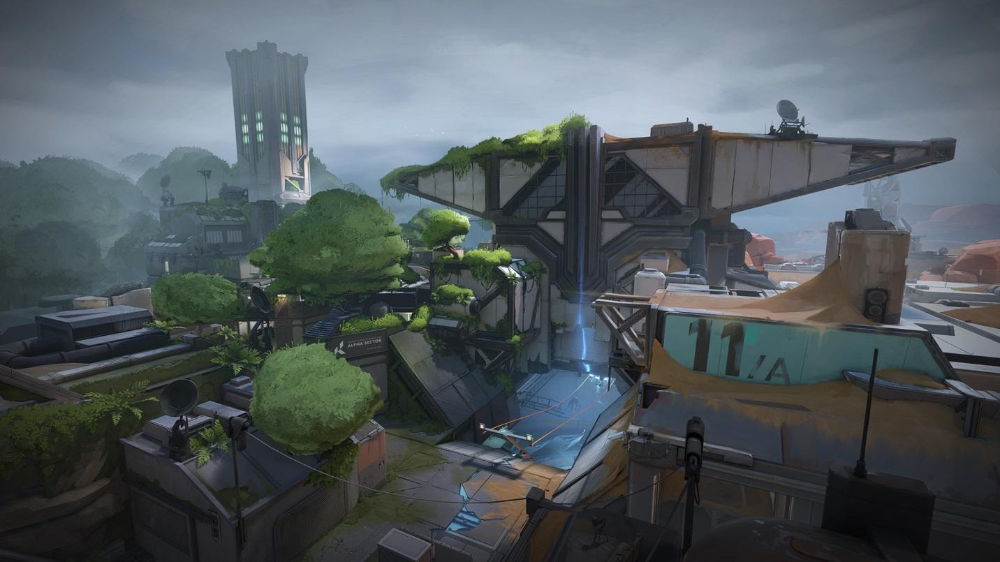

Menelusuri Keajaiban dan Kompleksitas Fracture: Mendalami Map Paling Inovatif di Valorant

Fracture, map ketujuh yang dirilis oleh Riot Games dalam gim Valorant, telah membawa angin segar dalam dinamika permainan tactical shooter. Dengan desain yang unik menyerupai huruf "H", dua titik spawn attacker, dan jalur zipline yang membelah bagian bawah map, Fracture memberikan pengalaman bermain yang jauh dari sekedar standar. Artikel ini akan membahas semua aspek penting tentang Fracture: mulai dari sejarah, desain, lore, strategi menyerang dan bertahan, pemilihan agent yang efektif, hingga elemen-elemen tersembunyi yang menjadikannya salah satu map paling kompleks dan menarik di Valorant.
Latar Belakang dan Lore Map Fracture
Asal Usul dan Inspirasi Desain Fracture
Fracture mengambil latar di Amerika Serikat, tepatnya di sebuah fasilitas riset bernama Everett-Linde. Cerita di balik map ini bermula dari eksperimen radianite berskala besar yang gagal total, menciptakan ledakan dahsyat dan membelah fasilitas beserta lanskap sekitarnya menjadi dua bagian. Karena itulah, nama “Fracture” atau “retakan” sangat merepresentasikan bentuk dan narasinya.
Yang menarik, Fracture juga memperkenalkan elemen mirrorverse atau dunia paralel—menambah lapisan cerita antara semesta Alpha dan Omega dalam dunia Valorant. Lore ini bukan sekedar pelengkap, tapi tertanam langsung dalam desain lingkungan peta, membuat pengalaman bermain terasa lebih hidup dan mendalam.
Peristiwa Kunci: Ledakan di Everett-Linde
Fasilitas Everett-Linde awalnya merupakan proyek perdamaian antara Alpha dan Omega dari Kingdom Corporation—dua faksi utama dalam konflik radianite. Namun, saat peluncuran alat eksperimental Large Radian Collider, dua penembak jitu misterius menyerang dan menyebabkan reaktor meledak. Tragedi ini menandai awal terbentuknya Fracture dan meninggalkan jejak sejarah penting dalam dunia Valorant.
Desain Unik Fracture dan Dampaknya terhadap Gameplay
Struktur “H” yang Tak Biasa
Berbeda dengan map Valorant lainnya yang umumnya menerapkan pola tiga jalur (three-lane), Fracture hadir dengan layout menyerupai huruf "H". Map ini dibagi menjadi empat quadrant dengan satu area mid yang besar. Zipline yang melintang di bawah tanah memungkinkan mobilitas tinggi dan manuver cepat. Desain ini memungkinkan attacker datang dari dua sisi sekaligus, menekan defender yang bertahan di tengah.
Fitur Zipline: Mobilitas Unik untuk Attacker
Salah satu fitur paling ikonik di Fracture adalah zipline bawah tanah yang menghubungkan dua sisi map. Attacker bisa langsung berpindah dari sisi satu ke sisi lainnya hanya dalam hitungan detik. Jalur zipline ini satu arah dan tidak bisa dihentikan di tengah, membuatnya jadi alat rotasi cepat sekaligus penuh risiko. Mobilitas ini menciptakan tekanan psikologis tinggi bagi defender karena arah serangan bisa datang dari mana saja.
Empat Ultimate Orb: Faktor Penentu Strategi
Fracture menjadi satu-satunya map yang menyediakan empat ultimate orb, yaitu di A Hall, A Dish, B Main, dan B Arcade. Hal ini membuat kontrol terhadap orb menjadi kunci dalam menentukan arah permainan. Tim yang menguasai orb lebih awal akan memiliki akses lebih cepat terhadap ultimate agent mereka, memberikan keuntungan signifikan dalam duel selanjutnya.
Penjelasan Area Utama dan Callouts Fracture
Site A
- A Site: Area utama penanaman spike dengan akses dari A Dish, A Main, dan A Drop.
- A Hall: Koridor sempit dengan pintu otomatis, sering jadi tempat duel jarak dekat.
- A Rope & A Drop: Jalur vertikal cepat untuk attacker, menawarkan variasi entry ke A Site.
Site B
- B Site: Lokasi tanam spike dengan choke point utama di B Arcade dan B Main.
- B Tower: Posisi tinggi dengan visibilitas luas, sangat strategis dalam mengontrol rotasi.
- B Arcade & B Main: Dua jalur entry utama yang sering menjadi titik krusial penyerangan attacker.
Mid dan Zipline
- Mid: Titik transisi penting antara Site A dan B yang mempercepat rotasi.
- Zipline: Jalur rotasi unik yang memungkinkan taktik penyergapan kilat dan bluff play.
Strategi Attacker di Fracture
Split Push dan Serangan Sandwich
Strategi utama attacker di Fracture adalah memanfaatkan dua titik spawn untuk melakukan split push—menyerang dari dua sisi secara bersamaan. Taktik ini menciptakan tekanan dari berbagai arah, memaksa defender untuk terpecah fokus. Kombo utility seperti flash dan smoke sangat efektif untuk mengaburkan pandangan dan membuka jalur entry.
Kontrol Orb dan Ultimate Point
Dengan empat orb tersedia, attacker punya kesempatan besar untuk mengumpulkan poin ultimate lebih cepat. Ronde awal sangat krusial untuk mengamankan orb ini, terutama untuk agent yang sangat bergantung pada ultimate-nya.
Rotasi Kilat via Zipline
Zipline memungkinkan attacker melakukan fake push. Setelah menimbulkan kebisingan di satu site, attacker bisa langsung rotasi ke site lainnya dalam waktu singkat. Strategi ini efektif untuk membingungkan defender dan menciptakan celah serangan.
Strategi Defender di Fracture
Pentingnya Penguasaan Tengah
Defender harus segera bergerak dari spawn tengah untuk menguasai area kritis seperti A Dish, B Main, dan Arcade. Komunikasi tim dan penggunaan utility seperti molotov, trap, atau smoke sangat diperlukan untuk menahan gempuran dari dua arah.
Rotasi Cerdas dan Cepat
Rotasi di Fracture lebih fleksibel karena mid spawn defender memudahkan akses ke kedua site. Namun, kehilangan kontrol area mid akan membuat rotasi jadi berbahaya dan tidak efektif.
Peran Vital Sentinel dan Controller
Agent dengan kemampuan area denial seperti Killjoy, Brimstone, atau Viper sangat disarankan untuk bertahan di Fracture. Penempatan turret, trap, smoke, dan wall yang tepat bisa memperlambat tempo serangan attacker secara signifikan.
Rekomendasi Agent Terbaik untuk Map Fracture
Duelist
- Raze: Efektif di choke point sempit, damage tinggi dan bisa clear area dengan cepat.
- Neon: Kecepatan geraknya sangat membantu di jalur zipline dan saat retake.
- Jett: Mobilitas tinggi dan cocok untuk entry dengan gaya agresif.
Initiator
- Breach: Stun dan flash-nya sangat membantu membuka site.
- Fade: Kombinasi reveal dan debuff cocok untuk info gathering.
- KAY/O: Kemampuan suppress membuat defender kehilangan akses skill penting.
Controller
- Viper: Wall dan smoke yang fleksibel membantu mengatur zona pertempuran.
- Brimstone: Smoke tiga arah dan ultimate sangat krusial untuk hold dan retake.
Sentinel
- Killjoy: Kombinasi turret dan nano swarm efektif menjaga site dari flank.
- Chamber: Bisa bertahan sambil reposition berkat teleport-nya.
Perilaku Pemain dan Meta Kompetitif di Fracture
Fracture menuntut adaptasi tinggi dari pemain. Komunikasi, awareness posisi, serta waktu rotasi sangat menentukan keberhasilan tim. Bahkan di skena profesional, Fracture kerap menjadi tantangan karena keluar dari pola map Valorant yang umum. Banyak tim e-sport besar pernah mengalami kekalahan mengejutkan di map ini pada masa awal perilisan.
Status Map Fracture dalam Rotasi Terbaru
Dalam beberapa update terakhir, Fracture sempat dikeluarkan dari rotasi kompetitif dan publik demi keseimbangan dan penyesuaian meta. Meski begitu, komunitas tetap menjadikannya salah satu map favorit karena tantangannya yang unik dan peluang eksperimen tak terbatas dalam strategi bermain.
Mitos, Trivia, dan Easter Egg di Fracture
- Poster sains dan peralatan di sekitar map mengisyaratkan kejadian besar dalam lore Valorant.
- Struktur zipline bawah tanah menyerupai reaktor rusak, simbol dari kehancuran Everett-Linde.
- Ada simbol-simbol tersembunyi yang menggambarkan konflik Alpha vs Omega.
Fracture bukan hanya sekedar map tambahan—ia adalah revolusi dalam desain taktis dan narasi. Setiap sudutnya dirancang untuk menantang pemain agar berpikir out-of-the-box, memaksimalkan kerja sama tim, dan menyesuaikan strategi setiap ronde. Fracture mendorong batasan tradisional gim FPS dan membuka ruang baru untuk evolusi gameplay yang lebih dalam.
Buat kamu yang ingin maksimalin pengalaman bermain di Fracture, jangan lupa untuk upgrade senjata dan agent favorit kamu. Top Up Valorant sekarang di Topupgim dengan cepat, aman, dan terpercaya. Karena persiapan yang tepat, bisa jadi kunci kemenangan di map paling kompleks ini!